Mòdul Professional 13 - Repte 6: RAID-5 amb Linux
Índex
1. Llicència d'ús

2. Objectius
- Crear un RAID 5 des de la instal·lació del servidor Debian.
- Diferenciar la partició swap de la del sistema.
- Utilitzar les eines per veure l’estat del RAID, de les particions i dels discs.
- Restaurar un RAID 5.
- Verificar la utilitat de la redundància de dades.
3. Procediment
Tot i que a la pràctica els RAIDs més comuns són el RAID1 i RAID5, junt amb el RAID0 de rendiment, en aquesta pràctica ens centrarem en conèixer a fons el RAID5, ja que és el que combina millor prestacions de velocitat i tolerància a errors perden el mínim de memòria.
Per veure el funcionament pràctic del RAID 5 en muntarem un en una instal·lació de Debian. L'objectiu serà crear un servidor preparat per instal·lar-hi algun servei (com web) utilitzant un esquema de particions el més real possible i que utilitzi un RAID5 per assegurar el seu funcionament 24/7.
La pràctica la dividirem en tres fases.
- Fase 1: Instal·lació
- On farem la instal·lació del sistema operatiu, tot particionant el disc separant el sistema operatiu de les dades i creant el RAID5 per software.
- Fase 2: Verificació
- On verificarem que el RAID5 funciona, tant amb eines del sistema com extraïent discs i comprovant que tan sols amb 2 discs el sistema continua funcionant.
- Fase 3: Recuperació de disc
- On simularem que falla un disc i hem de recuperar el RAID incorporant un disc nou en blanc al RAID.
3.1. Fase 1: Instal·lació
Per començar necessitarem una màquina virtual amb tres discos durs de la mateix mida.
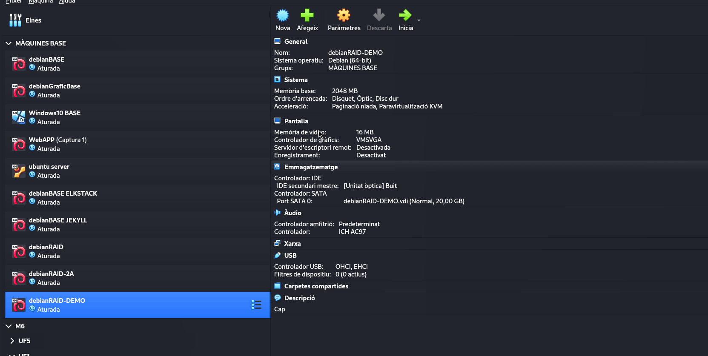
Figure 1: Preparació de la VM a VirtualBox, afegint els tres discos "físics" de la mateixa mida.
A partir d’aquí cal que investigueu com realitzar una instal·lació de Debian (l'última estable) amb un RAID-5 per software. L’objectiu final és un sistema amb 10GB pel sistema (/) i 30GB per dades (partició /var).
El RAID5 es crearà durant el particionatge dels discos i l’únic punt crític és crear les particions exactament iguals en els tres discos. Farem les següent sparticions a tots tres discos:
- 1GB d'àrea de intercanvi (swap).
- 5GB "sense utilitzar" destinats al RAID del sistema operatiu
/. - La resta de disc (14GB) "sense utilitzar" destinats al RAID de dades
/var.
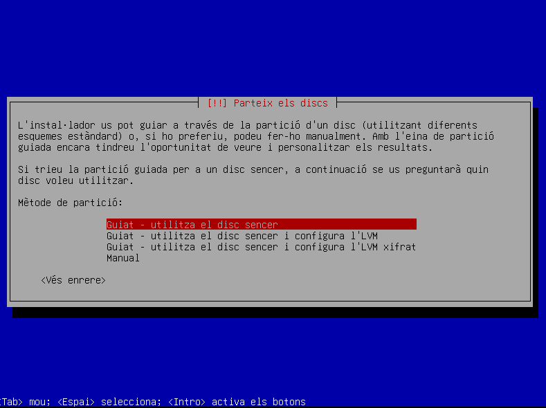
Figure 2: Particionem els discos físics pensant ja amb la creació del RAID5 i les mides finals que volem.
Un cop fet hauríem de tenir quelcom com això:
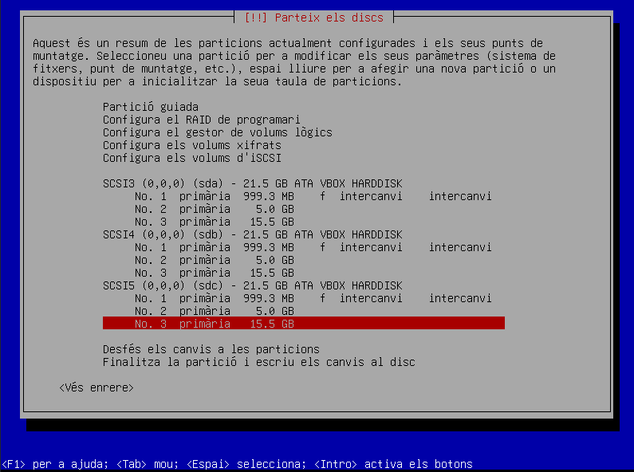
Figure 3: Resultat final del particionatge de discos, just abans de crear els RAID5.
Un cop fetes, s’ha d’anar a l’opció de RAID i crear 2 particions MD, una pel sistema / amb les particions de 5GB i l’altre per al punt de muntatge /var amb les particions de 14GB.
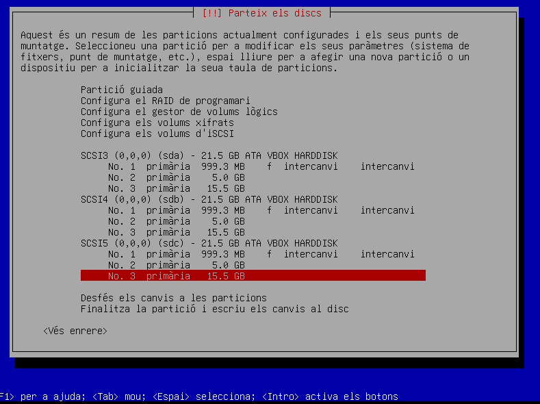
Figure 4: Creació dels dos RAID5, un pel sistema operatiu i l'altre per la partició de dades.
Finalment tan sols caldrà assignar al RAID MD0 el sistema de fitxers ext4 i el punt de muntatge /, i al MD1 sistema de fitxers ext4 i punt de muntatge /var.
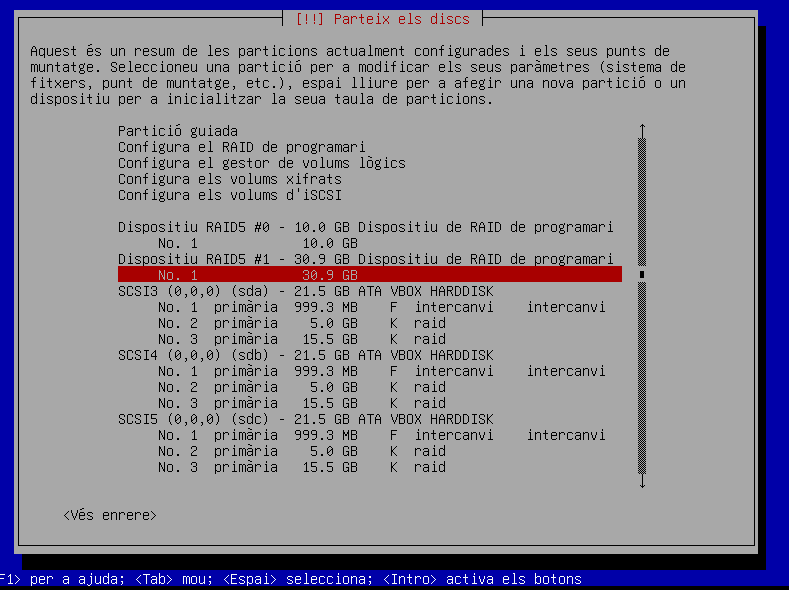
Figure 5: Configuració dels punts de muntatge del sistema operatiu i la partició de dades en les particions RAID5 corresponents.
Fixeu-vos que les particions RAID final han de ser de:
- MD0: 10GB.
- MD1: 30GB.
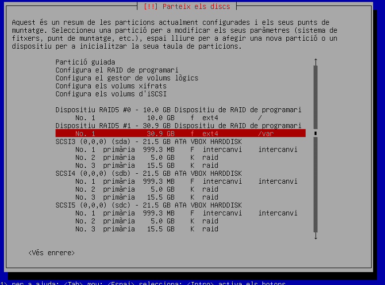
Figure 6: Esquema de particions i punts de muntatge resultants de tot el procés.
A partir 'aquests punt la instal·lació del sistema és totalment normal.
ATENCIÓ: Un cop acabada l’instal·lació FEU UNA INSTANTÀNIA de la VM (SNAPSHOT).
3.2. Fase 2: Verificació
Un cop feta la instal·lació, realitzeu proves del bon funcionament del RAID.
Verificació de l'estat del RAID amb la comanda
cat /proc/mdstat. Expliqueu la sortida de la comanda amb el màxim de detall.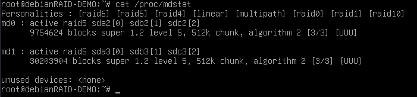
Figure 7: Cal que expliqueu en detall la sortida de la comanda
cat /proc/mdstat.- Error de disc 2: “eliminar” el disc 2 i verifiqueu que encara pot arrencar el servidor. Quin és el estat actual del RAID?
cat /proc/mdstat. Un cop comprovat torneu a incloure el disc 2 i recupereu la instantània de quan heu acabat la instal·lació. - Error de disc 1: “elimineu” el disc 1 i repetiu el procés. Si teniu qualsevol error en aquestes verificacions penseu en el procediment que hem seguit fins ara, si hem obviat quelcom, i cerqueu la solució i aplique-la a tots els discos. Expliqueu quina era la causa de l'error i com ho heu solucionat.
ATENCIÓ: Un cop acabat totes les proves inicials, poseu tots els discos originals i recupereu l’instantània de la finalització de l’instal·lació.
3.3. Fase 3: Recuperació de disc
Finalment suposem que ens ha fallat un disc i hem de substituir-lo per un de nou. A la màquina virtual elimineu un dels discos (tant fa quin) i afegiu-ne un de nou anomenat “disc-nou” del mateix tamany que la resta.
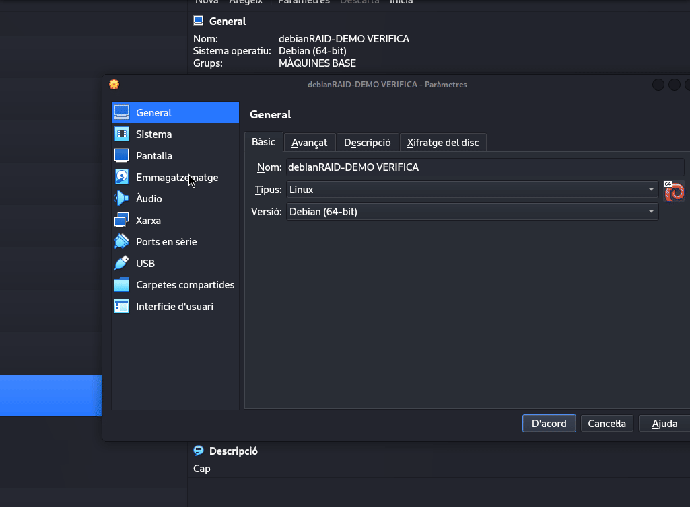
Figure 8: Eliminem un dels discs i afegim un de nou totalment blanc.
A partir d’aquí seguiu les següents instruccions:
- Inicieu la màquina amb normalitat, en principi al fallar tan sols un dels discos hem de poder treballar igual gràcies al RAID5 tot i que anirà sensiblement més lent.
De nou amb la comanda
cat /proc/mdstatverificar l’estat del RAID i confirmar que ens falta un disc en el RAID (totes dues particions a 3/2 discos).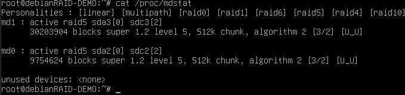
Figure 9: El sistema funciona gràcies al RAID5 tot i fallar un disc.
Hem de tenir molt clar quin disc utilitzarem com a “base” i quin és el disc nou en blanc. Un cop clar els dispositius copiarem la taula de particions del disc base al blanc amb aquesta comanda:
sfdisk -d /dev/DISC-BASE | sfdisk /dev/DISC-BLANC. Aquí hauríem de veure que efectivament hem creat la mateixa estructura de particions en el disc blanc.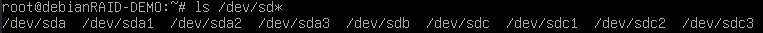
Figure 10: Podem veure els discos i particions amb un simple ls.
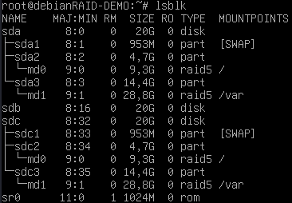
Figure 11: Podem veure la mateixa informació, més la pertinença a un raid, amb la comanda lsblk.
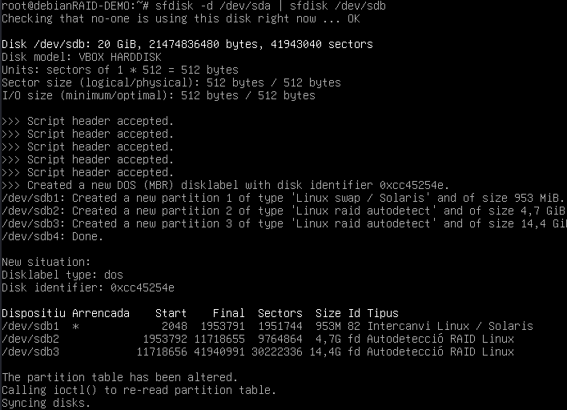
Figure 12: Un cop sabem quins discos tenim, podem fer la còpia de la taula de particions d'un disc funcional al disc que està en blanc.
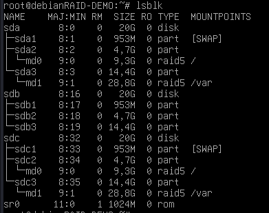
Figure 13: La taula de particions s'ha copiat correctament, però el nou disc encara no forma part del raid.
Ara afegirem aquestes particions al RAID5 existent, per fer-ho haurem de fer la comanda
mdadm --manage /dev/PARTICIO-RAID --add /dev/PARTICIO-DISC-BLANC. Això ho haurem de repetir per cada partició i fixa-nos molt de fer-ho on toca. En aquesta pràctica la partició “petita” era la SWAP i la gran la resta del sistema, per tant, us podeu guiar per les grandàries de les particions.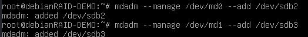
Figure 14: Afegim les particions del nou disc al raid corresponent. Cal estar al cas!
L'última partició que ens queda per configurar del nou disc és la de swap. Per formatar-la com a swap utilitzarem la comanda
mkswap /dev/PARTICIO-SWAPi per activar-la amb la comandaswapon /dev/PARTICIO-SWAP.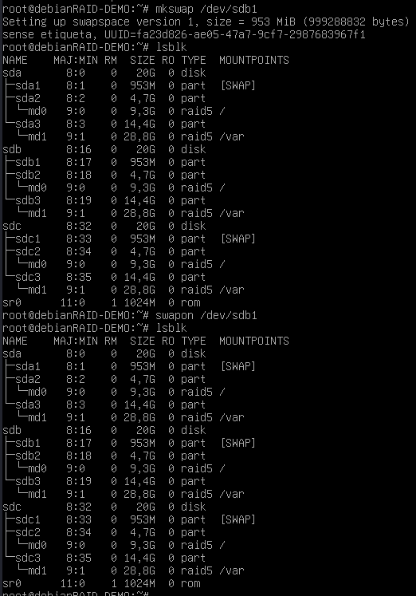
Figure 15: Finalment formatem com a swap la partició corresponent amb mkswap i l'activem amb swapon.
Ja per acabar ens manca instal·lar el GRUB en el disc nou amb
grub-install /dev/DISC-NOUi ja verificar que el RAID està en perfectes condicions ambcat /proc/mdstat.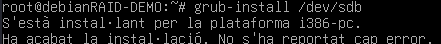
Figure 16: Instal·lem el GRUB al nou disc.
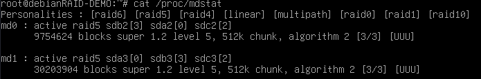
Figure 17: Verifiquem que el RAID està regenerat i tot OK.
4. Comandes a utilitzar
Durant la pràctica utilitzareu vàries comandes, com poden ser:
man <comanda>- El manual, per obtenir ajuda sobre una comanda
man <comanda>. whatis <comanda>- Útil per tenir un resum ràpid sobre l'utilitat d'una comanda concreta.
cat /proc/mdstat- Al arxiu
mdstathi ha la informació sobre l'estat actual dels RAIDs del sistema. sfdisk [opcions]- L'utilitzarem per recuperar l'estructura de particions d'un disc i copiar-la en un altre.
mdadm [opcions]- Comanda per a la gestió de RAIDs a Linux.
grub-install <disc>- Comanda per instal·lar de forma manual GRUB.
lsblk- Llista en format d'arbre els diferents dispositius d'emmagatzematge, particions i punts de muntatge del sistema.
ls /dev/sd*- Simplement llistar tots els dispositius sd (sata disk) del sistema i les seves particions.
mkswap <partició>- Marca una partició per a utilitzar-la com a àrea d'intercanvi (swap).
swapon <partició>- Activa una partició swap.
5. Possibles problemes
5.1. Raid en mode auto-read-only
Cal executar mdadm --readwrite /dev/<raid>
5.2. initramfs
En ocasions ens podem trobar que el sistema no arranca i en comptes de demanar usuari i password, apareixem al initramfs. Des d’aquí estem molt limitats per fer moltes coses. La solució passa per descarregar el Boot-disk-repair i entrar amb una live per veure quins poden ser els problemes.
5.3. Dirty
En cas que en afegir una partició al RAID aparegui un error com que la partició està bruta (dirty) el que podem fer és aturar el RAID i crear-lo de nou ignorant la informació que hi hagi als discos.
mdadm --stop /dev/md0
mdadm --create /dev/md0 --assume-clean --level=5 --metadata=1.2 --raid-devices=3 /dev/sda1 /dev/sdb1 /dev/sdc1